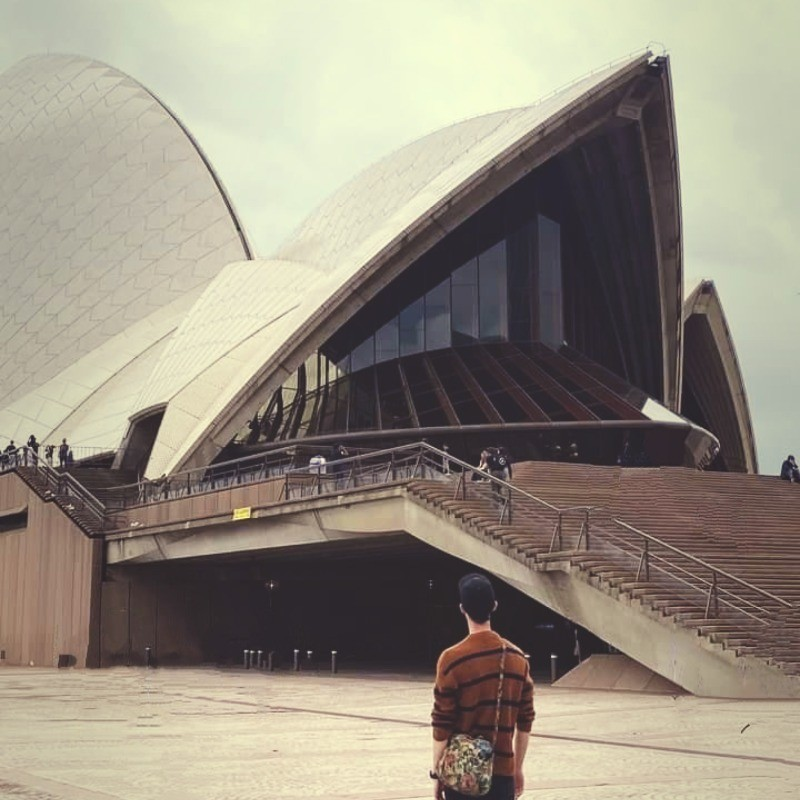

Hi, I'm Aiden.
Mechatronics & Biomedical Engineering
I build intelligent physical systems, bridging the gap between mechanical engineering, robotics, and robust software architecture.

Core Capabilities
⚙️ Mechatronics
- Control Systems Design
- Sensor Integration
- Embedded C / C++
- Fusion, CAD & FEA
💻 Software Engineering
- Python (Data/ML)
- JavaScript & TypeScript
- C / C++ Low Level
- Git & Version Control
🧬 Biomedical Engineering
- Signal Processing
- Biomechanics
- Medical Device Design
Recent Deployments
PathSync Timeline
A web-based tool to analyze and compare Google Timeline JSON files to find proximity events between multiple individuals.
JavaScript
TailwindCSS
View Project
Forward-Forward LLM (FF-LLM)
An experimental implementation of a Large Language Model trained using Geoffrey Hinton's Forward-Forward (FF) algorithm.
Python
GitHub
More projects compiling...